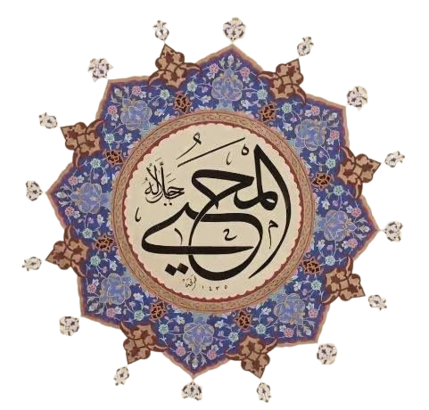

Allah, işlerini melekleri ile yapar; ama yağmuru indirmek gibi, öldürmek ve diriltmek de Allah'a mahsus.
30:19
yuḣricul-hayye minel-meyyiti veyuḣricul-meyyite minel-hayy
Ölüden diriyi çıkarıyor; diriden de ölüyü çıkarıyor. Yeryüzünü ölümünün ardından canlandırıyor. İşte siz de böyle çıkarılacaksınız.
Kur’an’da ihyâ fiilinin geçtiği birçok âyette “imâte” fiili de yer alır. “Ölmek” mânasındaki “mevt” kökünden türetilen “mümît” kelimesi Kur’an’da bulunmamakla birlikte aynı kalıptan türeyen fiil sîgaları yirmi üç âyette Allah’a nisbet edilmiş, ayrıca “ölümüne veya işinin bitirilmesine hükmetmek” anlamına gelen ve “kazâ” kavramıyla oluşan çeşitli ifadeler de zât-ı ilâhîye izâfe edilmiştir
Kaynak: İslam Ansiklopedisi
Hayat ve ölümün birlikte geçtiği 65 ayet var. Bunların yalnız ikisinde el-Muhyî isim olarak geçiyor: 
30:50
keyfe yuhyil-arda ba’de mevtihâ, inne żâlike lemuhyil-mevtâ
Yeryüzünü ölümünün ardından nasıl diriltiyor! Şüphesiz ki O, ölüleri de diriltendir.
Bu iki ayette, ölü toprağın yağmur ile canlanması, insanların tekrar dirileceğine delil olarak gösterilmiş.
Diğer isim el-Mumît bu haliyle yok, ancak fiil olarak kullanılmış:
40:68
huvelleżî yuhyî veyumît
Dirilten ve öldüren O’dur